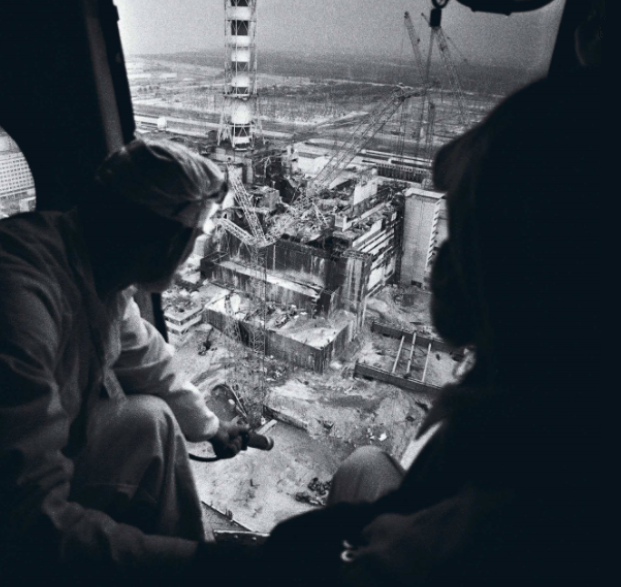
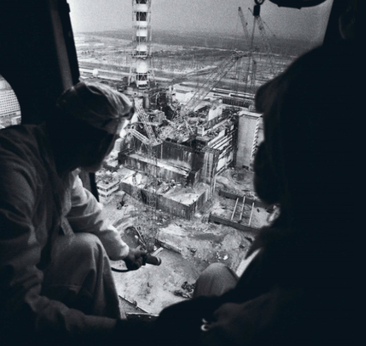

El sábado 26 de abril de 1986 en la central nuclear Vladímir Ilich, mejor conocida como central Chernobyl, ocurre un fallo del reactor número 4 que desemboca en la liberación de una nube radioactiva que afecta a toda Europa y vuelve inhabitable los alrededores del reactor. Este es el relato de lo sucedido
25 de Abril
- 1:00 PM
Los operadores de la central nuclear Vladímir Ilich reducen la potencia del reactor número 4, llevándola a 1600 MW. No era un procedimiento rutinario: se preparaban para una peligrosa prueba de seguridad.
La prueba simulaba un corte de energía, con el objetivo de comprobar si las turbinas del reactor podrían generar suficiente energía para mantener activo el sistema de enfriamiento el tiempo necesario hasta que entrarán en funcionamiento los generadores de emergencia.
- 2:00 PM
Se desactivaron los sistemas de enfriamiento para evitar interferencias durante la prueba. Este cambio no fue informado a los operadores presentes en planta al momento de la prueba de seguridad. A pesar de los preparativos, la prueba de seguridad seguía posponiéndose debido a la alta demanda energética y la exigencia de mantener el suministro eléctrico.
26 de Abril
- 12:00 AM
Finalmente, llega el permiso para proceder con la prueba de seguridad, que coincidió con un momento crucial: el cambio de turno. Esto sería el preludio del desastre, ya que este personal nocturno era menos experimentado y tenía conocimientos limitados sobre los procedimientos específicos de la prueba. Como primer paso, los operadores redujeron la potencia del reactor a 720 MW, marcando el inicio de una cadena de coincidencias y errores que llevarían al desastre.
- 12:28 AM
Los operadores, desconociendo la incapacidad del reactor para funcionar bajo los 700 MW por períodos prolongados de tiempo, vuelven a bajar la potencia del reactor a 500 MW. Debido a la peligrosa pérdida de energía, el reactor 4 activa los sistemas de regulación de emergencia, lo que pone en pausa la prueba de seguridad. Determinados a continuar, y en un intento desesperado por restablecer la potencia, los operadores remueven algunas de las 211 barras de seguridad del reactor. Esto tiene el efecto contrario, haciendo que se acumule xenón y la energía caiga drásticamente a 30 MW, muy por debajo de cualquier margen operativo seguro.
- 1:00 AM
Los operadores logran que la energía del reactor vuelva a los 200 MW y, por un breve instante, parece haberse estabilizado. Así que el jefe de operaciones, Anatoli Stepánovich Diátlov, ordenó que para la continuación de la prueba se apagaran los sistemas de emergencia y se incrementase el flujo de agua al núcleo. Pero esta instrucción, lejos de restaurar el equilibrio, desencadenó una nueva crisis: una caída significativa en la actividad del núcleo y el retiro de más barras de control para compensar la baja actividad energética, dejando activas solamente 8 de las 211, lo que infringía las medidas de seguridad que dictan la presencia de un mínimo de 30 barras de boro en el núcleo. Además de todo lo anterior, el reactor logra permanecer al 7% de su capacidad energética.
- 1:23 PM
Las pruebas de seguridad se retoman, solo para que 30 segundos después el núcleo comience a acumular presión. Hay alarmas sonando por todas partes del reactor y uno de los operadores intenta el apagado de emergencia (SCRAM), pero las barras de control que debían estabilizar la situación solo la empeoran.
Las barras comienzan a chocar unas con otras al ser reinsertadas; además, las puntas de grafito en estas tienen un efecto contrario a lo esperado, provocando el aumento descontrolado de la reactividad. Trabajadores de la planta notan que las tapas de las barras saltan en la tapa del reactor y corren a dar aviso, pero ya es demasiado tarde. Todos los incidentes crean una reacción en cadena a gran escala, que resulta en la primera explosión del reactor n.º 4, la cual manda a volar la tapa del núcleo y crea una abertura en el techo del reactor. A esta primera explosión le sigue la explosión del núcleo, que liberó cientos de toneladas de radiación en forma de cenizas, grafito y humo que se extendió por la mayoría de Europa como una sombra que anuncia muerte, causando silenciosamente enfermedades radiactivas en miles de personas. La respuesta de Diátlov fue seguir manejando el reactor como si nada hubiese pasado, subestimando los daños en el reactor. Mientras tanto, los rescatistas y bomberos se dirigían a la planta, desconociendo el trágico final de sus destinos.
Alrededor de 28 personas murieron en la explosión inicial; 100 de los trabajadores fueron heridos gravemente y todos los trabajadores sobrevivientes desarrollaron enfermedades debido a la exposición radiactiva meses después.
- 1:28 AM
A unos pocos kilómetros, los ciudadanos de Pripyat, una ciudad construida para albergar a los trabajadores de la planta y sus familias, se reúnen en un puente para presenciar el fuego y el caos dejado por la explosión. Años después, este puente sería conocido como el puente de la muerte. Los ciudadanos de Pripyat desconocen la situación y no se dan cuenta de la enorme cantidad de radiación a la cual están siendo expuestos.
Los bomberos llegan al reactor para intentar apagar el fuego sin ser informados sobre la gravedad del asunto y se presentan en el reactor sin el equipo de seguridad adecuado. La exposición a la radiación del reactor provoca que su piel se enrojezca, sientan mareos y aparezcan quemaduras por todo su cuerpo, signos de intoxicación radioactiva. Los rescatistas no se dan cuenta de que a lo mejor solo les quedan meses de vida.
- 2:15 AM
Los altos mandos de la Unión Soviética se enteran del desastre en el reactor número 4. En lugar de alertar a la población o iniciar una evacuación inmediata, bloquean los caminos que entran y salen de Pripyat. El gobierno soviético, optando por el secretismo, decide ocultar la verdadera naturaleza del accidente, minimizando la magnitud del desastre incluso dentro de sus propias filas. El personal es despachado hacia el corazón de la catástrofe sin ninguna medida preventiva ante la radiación que inunda el lugar.
- 5:00 AM
Ante la magnitud del desastre, se ordena el cierre del reactor 3 como una medida desesperada, un intento por evitar una nueva tragedia o la evolución incontrolable del caos ya desatado. Horas más tarde, los reactores 1 y 2 también son apagados.
- 6:35 AM
Los incendios en los alrededores han sido extinguidos, pero el fuego del núcleo es imposible de alcanzar sin que los bomberos mueran debido a la radiación, principalmente debido al corium, material que se forma cuando los materiales radiactivos del núcleo liberan tanto calor que comienzan a derretirse a sí mismos. El corium comienza a derretir su camino hacia la piscina de supresión de burbujas bajo el reactor. La nube de radiación, 400 veces más potente que la bomba de Hiroshima, fue un gran problema para los líderes de la Unión Soviética, quienes querían mantener la explosión del reactor en secreto del resto del mundo.
27 de Abril
- 10:00 AM
Aviones con arena, plomo, boro y arcilla comenzaron a sobrevolar la zona expuesta del núcleo, aún en llamas, con la intención de apagar el fuego y contener la radiación. El personal de emergencia despachado al reactor finalmente se marcha a sus casas, llevando consigo no solo historias del reactor, sino también la radiación de este.
 

- 2:00 PM
Treinta y cinco horas después de la explosión, la ciudad se vuelve un caos y los ciudadanos de Prípyat y las ciudades cercanas al reactor son evacuados sin ninguna explicación, dejando atrás sus vidas y todo lo que conocen. Este retraso en la evacuación llevó a la muerte de muchas personas innecesariamente debido a los prolongados tiempos de exposición a la radiación, pero la prioridad del gobierno soviético se encontraba en contener la información, no en la seguridad de las personas. Por esta misma razón, a los ciudadanos evacuados se les dijo que solo se irían por unos días y que volverían pronto a casa, a pesar de estar conscientes de que esto no sería posible.
28-29 de Abril
Se extiende una “zona de exclusión” de 2634 km² alrededor de la planta nuclear de Chernóbyl, que luego se amplió a 4143 km², y que se mantiene en la actualidad.
Otros países comienzan a notar los altos niveles de radiación y los rastrean de vuelta a la Unión Soviética, que, de nuevo, finge que todo está bajo control. Al día siguiente, los satélites espías de los Estados Unidos confirman la situación en el reactor de Chernóbyl y los países cercanos comienzan a implementar precauciones contra la radiación.
4-6 de Mayo
Entre 80 000 y 600 000 personas, apodadas como “liquidadores”, comienzan la limpieza del área. Esto incluye la remoción de escombros causados por la explosión, el exterminio masivo de animales en el área que pudieran transmitir la radiación fuera del perímetro establecido y la creación de túneles para verter nitrógeno líquido bajo el reactor, en intentos de congelar el suelo del reactor y drenar el agua de las piscinas de supresión de burbujas bajo este para evitar una explosión que superará la del 26 de abril. Tres voluntarios, trabajadores de la planta, se ofrecen a bucear bajo el reactor para drenar la piscina y evitar la explosión. La prensa los presenta como nobles héroes que salvaron incontables vidas y murieron una semana después.
El 6 de mayo, el fuego del reactor finalmente se apaga y las emisiones radiactivas del reactor bajan considerablemente en consecuencia.
20 de Mayo
Veinticuatro días después del desastre comienza la construcción de lo que sería la primera de varias estructuras diseñadas para sellar los restos del reactor. Debido a su apresurado diseño y construcción, “El sarcófago”, una gran estructura de miles de toneladas de acero y cientos de metros cúbicos de hormigón, ha tenido que ser reconstruido o modificado en diversas ocasiones.